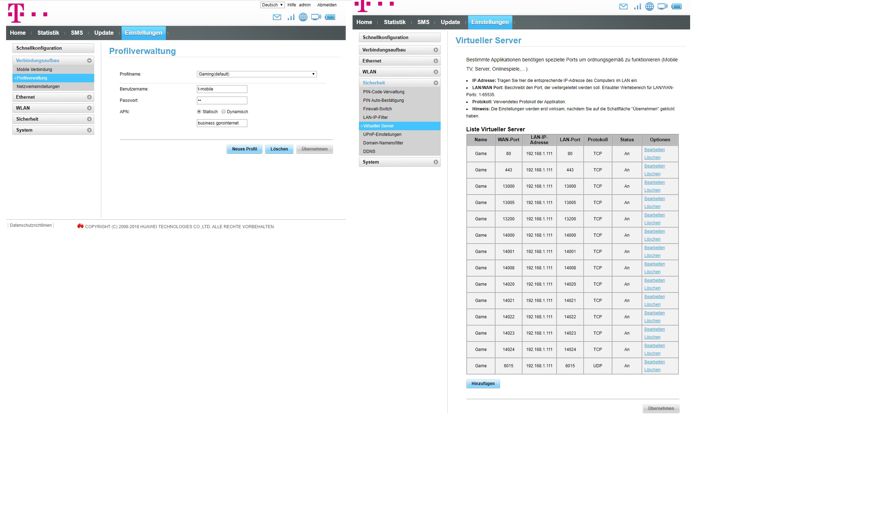

Ich probier schon seit langen Portweiterleiten zbs port 80 aber nicht was ich mache hilft zeigt trotzdem geschlossen an
hab ein profiel angelegt business.gprsinternet, virtuellerserver port 80 eingetragen, mir ne fixe ip gegeben, alle firewalls aus gemacht und trotzdem ist er angeblich zu. Blockiert magenta ports?
aja bin mit kabel verbunden
oder kann mir das noch wer besser erklären?
danke
Bearbeitet
von Manuela L.
NTM
Hey
@Manuela L.
Hast du schon den Business APN eingerichtet? Diesen brauchst du nämlich um eine öffentliche IP zu bekommen, damit die Portweiterleitungen funktionieren. Wenn nicht, dann gehe auf deiner HomeNetBox zu
Einstellungen -> Verbindungsaufbau -> Profilverwaltung. Erstelle dort ein neues Profil mit den folgenden Daten und speichere dieses im Anschluss. Nach dem Erstellen und Speichern des Profils, stelle bitte sicher, das dieses angewendet ist.
Profilname: "public IP"
Benutzername: "t-mobile"
Passwort: "tm"
APN: "business.gprsinternet"
LG NTM
Manuela L.
Bin mit Ethernet(LAN Kabel) verbunden
das Profil hab ich schon eingerichtet Apn ist auch auf Statisch
UPnP-Status ist: An
Virtueller Server: LAN IP Adresse gleiche eingetragen wie was ich Statisch meinen PC zugewiesen habe. Sprich IP: 192.168.1.111(sowohl LAN-IP-Adresse wie PC-IP) hoffe das stimmt so? oder muss die LAN-IP-Adresse eine andere sein wie die PC IP?
MfG
MarioM
59 minutes ago, Manuela L. said:
Virtueller Server: LAN IP Adresse gleiche eingetragen wie was ich Statisch meinen PC zugewiesen habe.
Das stimmt schon so ...
Kannst du mal einen Screenshot deiner Konfiguration posten? Vielleicht können wir dir weiterhelfen
4 hours ago, NTM said:
Hast du schon den Business APN eingerichtet?
Ist schon gemacht ...
Manuela L.
Welche Konfiguration brauchst du genau? Hab gerade gesehen das bei Ethernet-Status alles Unbekannt ist oder soll das so?

ja ich hab Internet und ich hab test-halber Windows Firewall und Virenprogramm abgedreht! Trotzdem sind nach der einen Seite alle Ports noch geschlossen hab sogar die Firewall von der Home box abgedreht trotzdem alle noch geschlossen.
So jetzt ist warum auch immer 1 Port offen obwohl ich nix gemacht habe aber die anderen sind noch zu
Ps:Aja danke für den Link trotzdem. kleiner Tipp du solltest den link auf Windows 10 umändern ich denk die meisten haben Windows 8 nicht mehr (weil bei win 10 sind andere Schritte um dort hinzukommen)
{kind=link}
{kind=link}